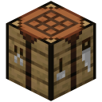
A server in a minute
Pick Vanilla, Paper, Fabric, NeoForge, Forge, Quilt, Bedrock or a whole modpack. Lodestone downloads the right Java and the server, sets the memory and starts it. No command lines.
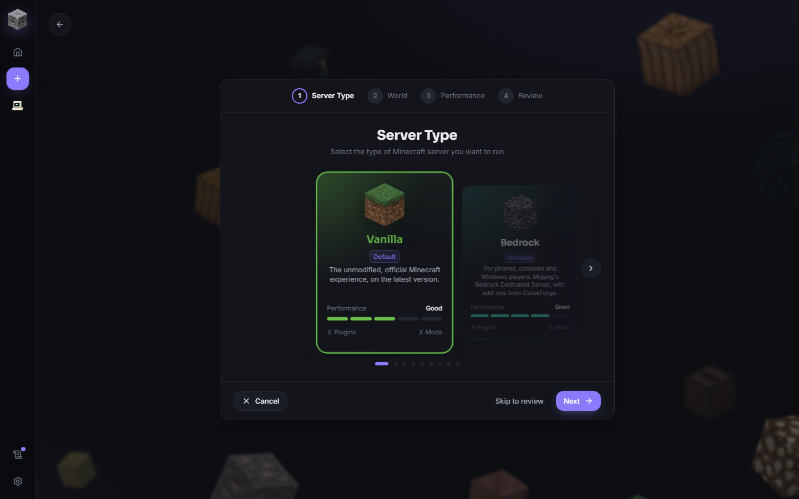
Create a server in a minute, give friends an address that works from anywhere with no port forwarding, and manage everything from one free app on your own PC.
Free · Windows 10 and 11 · Updates itself

Pick Vanilla, Paper, Fabric, NeoForge, Forge, Quilt, Bedrock or a whole modpack. Lodestone downloads the right Java and the server, sets the memory and starts it. No command lines.

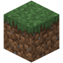
Lodestone gives your server a public address through playit.gg, built right into the app. No router settings, no port forwarding. Bedrock players and Simple Voice Chat get their own addresses too.
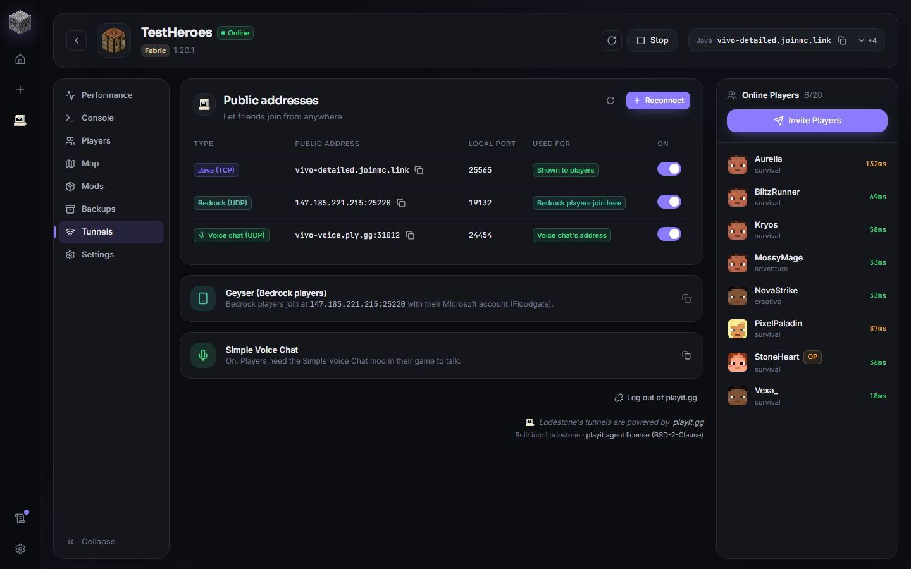
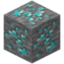
CPU, memory, ticks per second and players over time, with peak players, monthly actives and average session length. Spot lag before your friends do.
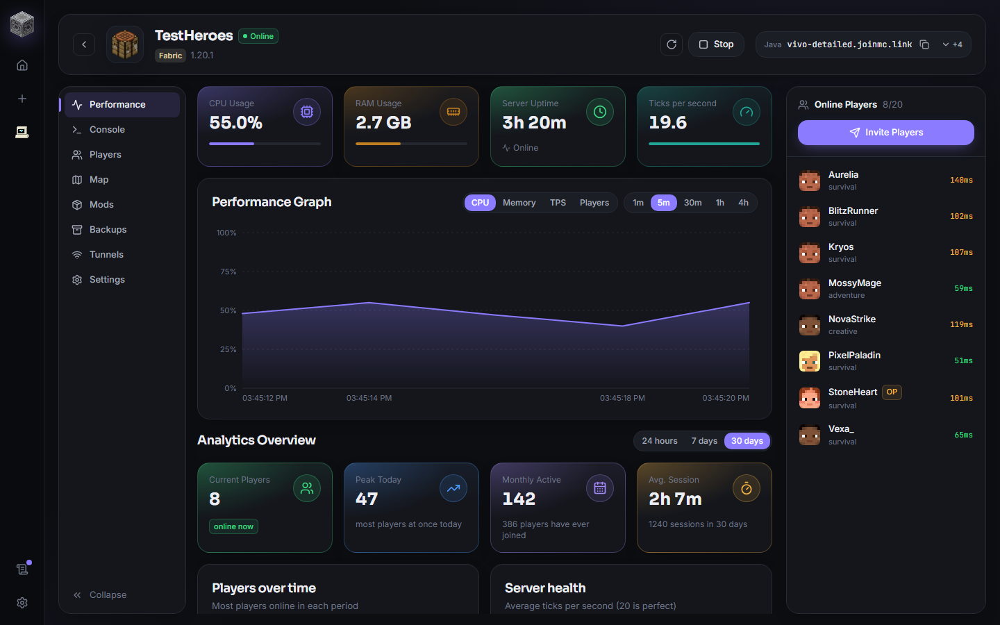
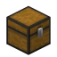
Health, hunger, ping and location at a glance. Kick, timed bans, teleport, heal, operators, and the real Minecraft inventory screen to move, add or edit items.
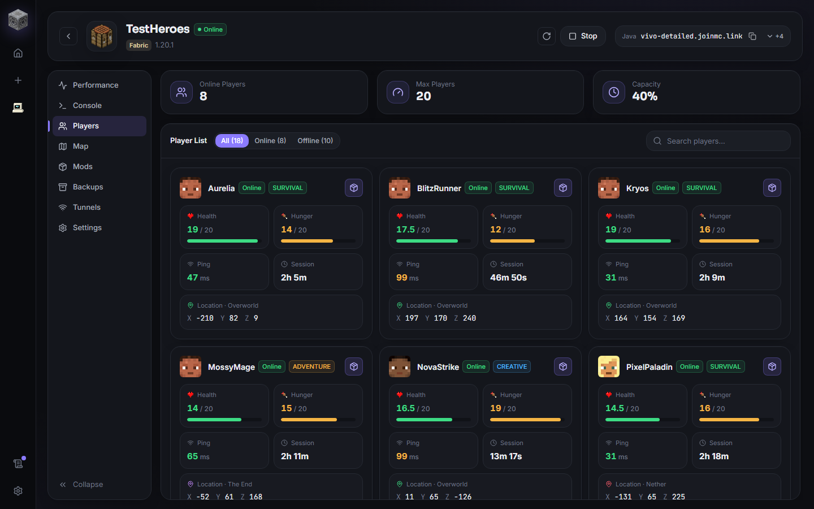
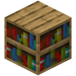
Search Modrinth and CurseForge, install with every mod it needs, and get told about updates. Lodestone reads your installed jars and offers whatever is missing.
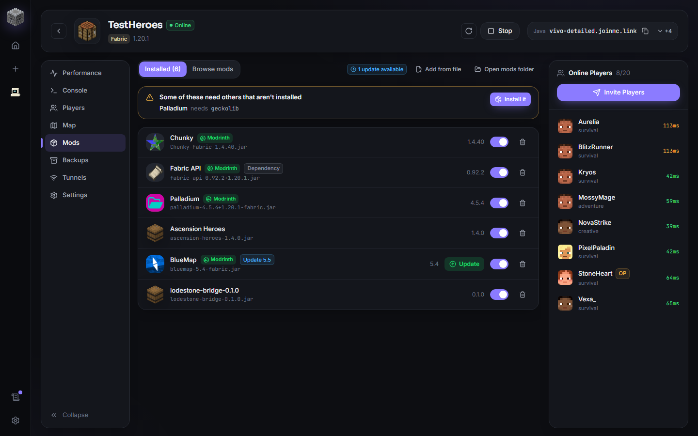
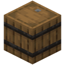
Colours, filters for chat, joins and warnings, command history and Tab completion. Crashes come with a plain-English report of what went wrong.
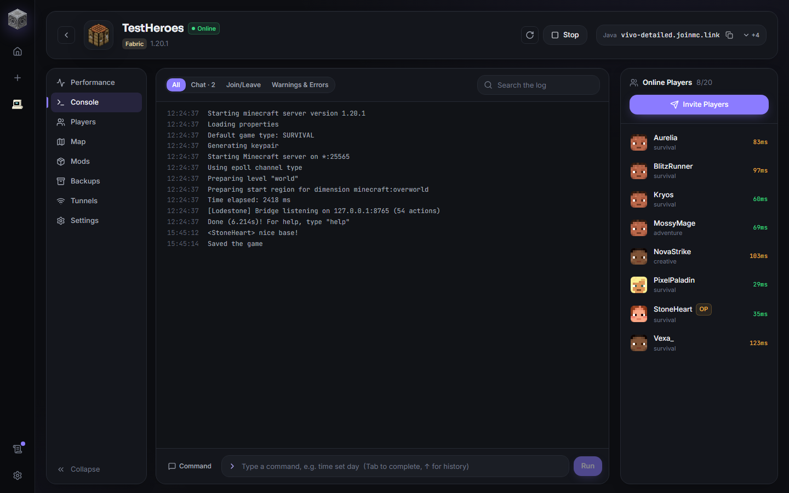
Your world drawn from its save files, with players moving on it. Nothing to install on the server.
On a schedule, kept while the server runs, restored in a click.
Share a password and a friend manages the server from their own Lodestone. Starting, stopping and deleting stay with you.
Keep inventory, day and night, mob griefing and more, as simple switches.
Geyser set up for you, so friends on phones and consoles join your Java server.
New versions install with a click, and your servers are stopped safely first.
How Lodestone compares with other ways to play Minecraft with friends.
| Feature | 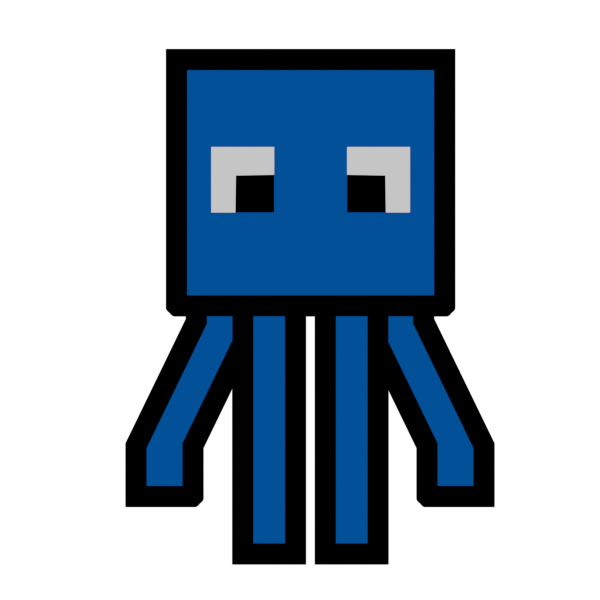 SquidServers |
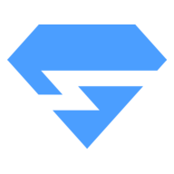 Minehut |
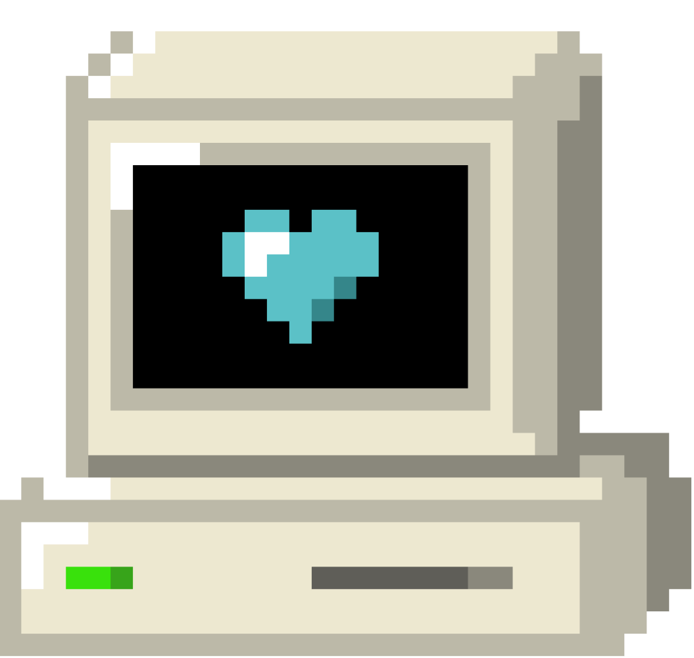 playit.gg |
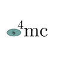 e4mc |
Essential |
|---|
✓ Yes – Partly ✕ No
From each service's public information as of November 2026. Free plans and features change, so check their sites for the latest. All names and logos belong to their owners.
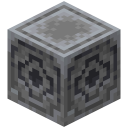
Free, for Windows 10 and 11. It keeps itself up to date after you install it.
Download for WindowsLatest version
Loading updates…
Yes. There's no subscription and no paid tier. Your server runs on your own PC, so there's nothing for us to charge for. If you'd like to help, Ko-fi is coming.
No. They only need Minecraft and your server's address. Lodestone is for you, the host (and for friends you let help manage it).
No. Lodestone gives your server a public address through playit.gg, built into the app. You log in to playit.gg once (free) and every server can get an address.
Yes, while people are playing. The server runs on your computer, so when it's off or asleep, the server is offline. Lodestone can keep running in the tray when you close the window.
Vanilla, Paper, Purpur, Fabric, Quilt, Forge, NeoForge and Bedrock, on current and older Minecraft versions, plus modpacks from Modrinth and CurseForge.
Yes. Make a Bedrock server, or turn on Geyser for a Java server so players on phones, consoles and Windows can join it too.
The warning appears because the installer isn't signed by a company yet. Click More info, then Run anyway. Updates after that are signed, and Lodestone only installs updates signed by us.
They're on the way. Windows comes first.
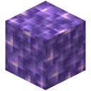
AboutLodestone is a small, independent project. We built it because hosting a server for friends shouldn't mean port forwarding, command lines, waiting in queues or paying every month. Your server runs on your own PC, at full speed, with everything you need in one place.
It's free. If you'd like to help keep it going, you can support us on Ko-fi.